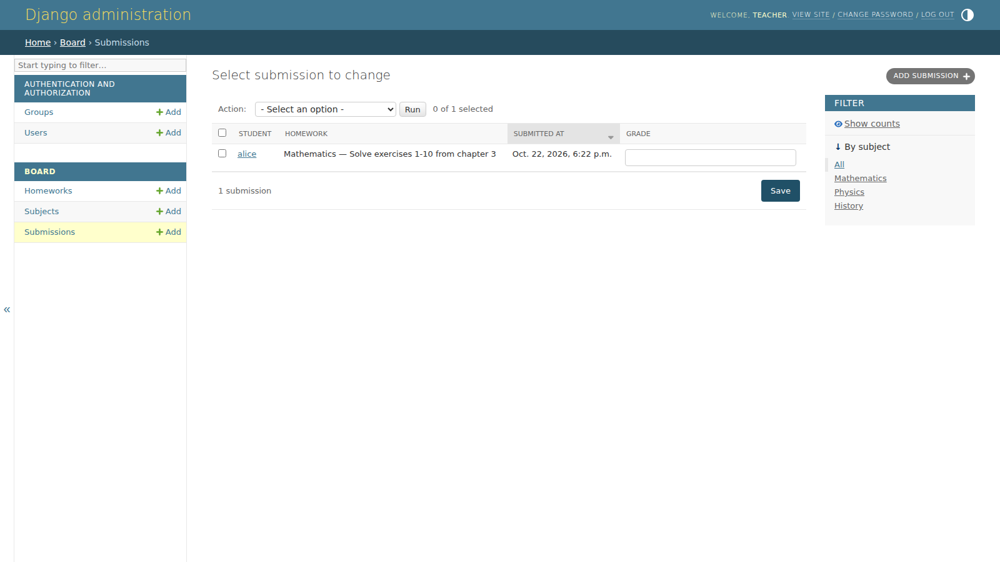
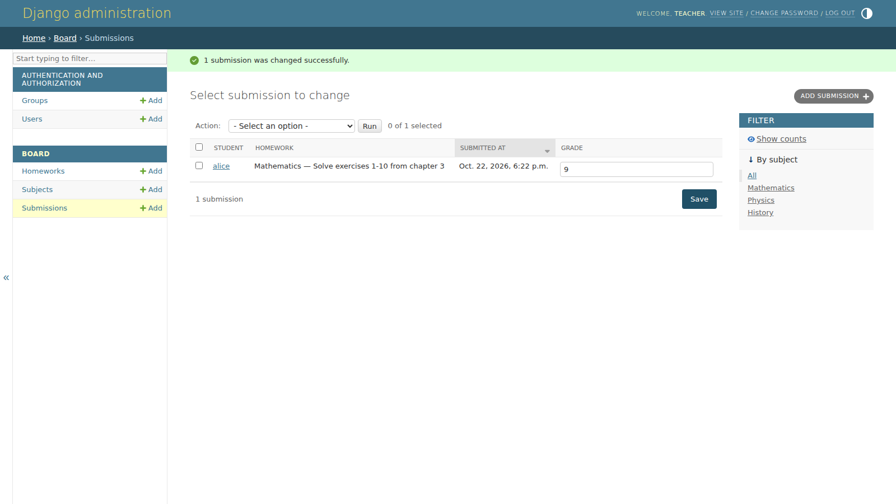
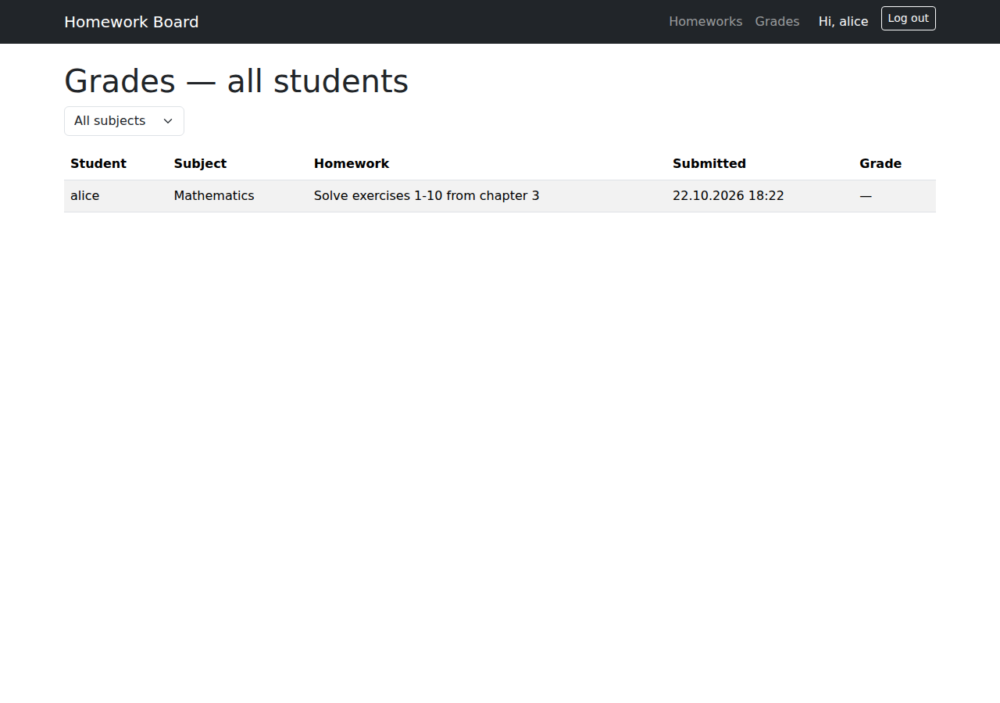
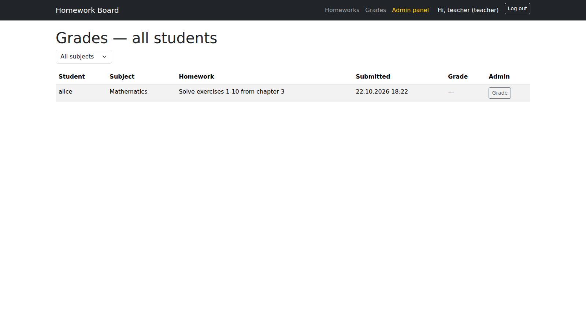
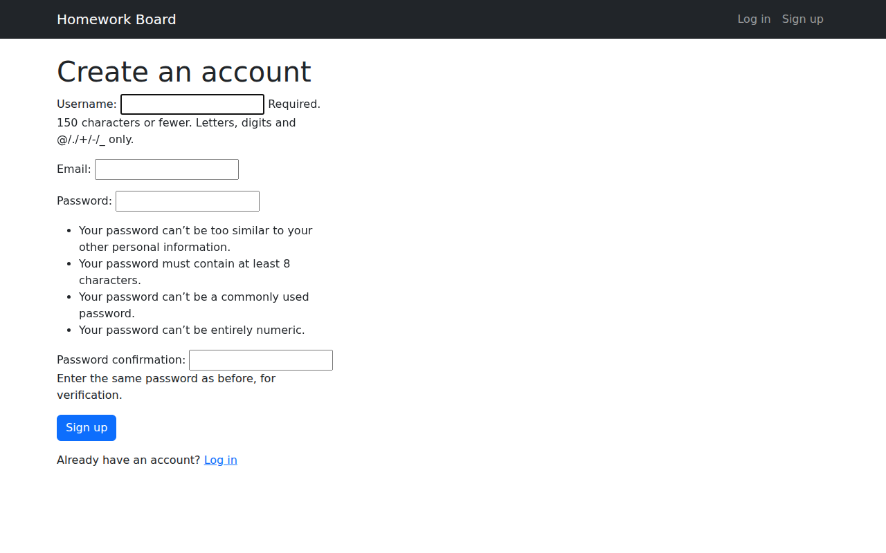
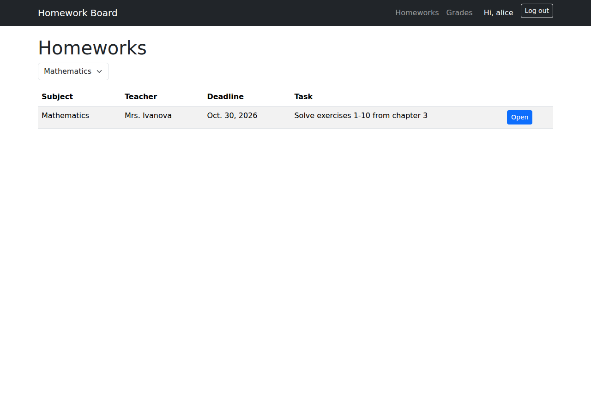
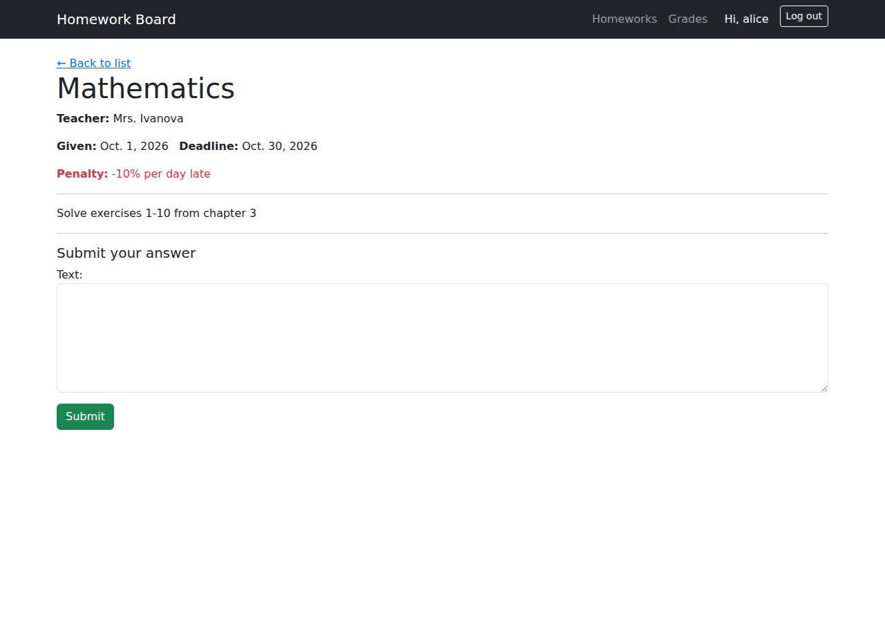
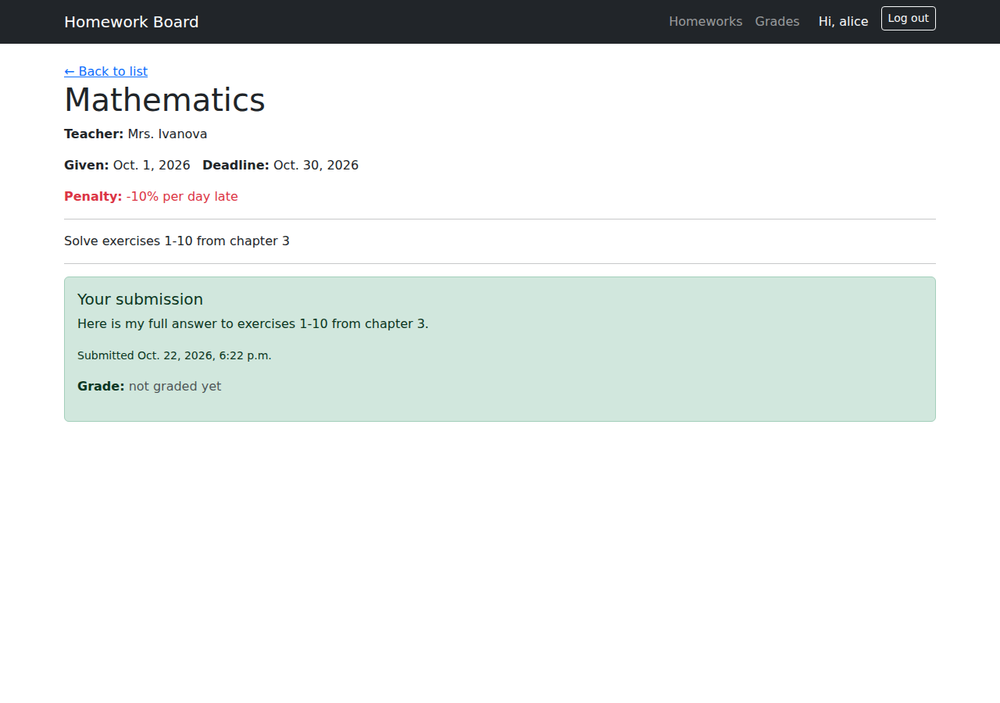
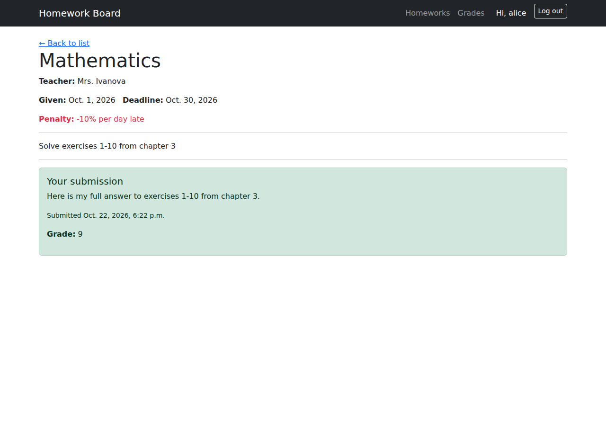

ЛР2 — Простой сайт на Django
Вариант 2 — Доска домашних заданий
Стек: Python 3, Django 6, SQLite (локальная разработка) / PostgreSQL (см. раздел "Переключение на PostgreSQL" в README проекта), Bootstrap 5 (подключён локально как статический файл, без зависимости от CDN).
Модель данных
Три модели, связанные через ForeignKey:
Subject (предмет)
└── Homework (домашнее задание) [ForeignKey: subject]
└── Submission (сдача задания) [ForeignKey: homework, student]
- Subject — название предмета (
name). Вынесен в отдельную таблицу вместо текстового поля наHomework, чтобы фильтр по предмету был выпадающим списком без опечаток. - Homework — предмет, преподаватель, дата выдачи, дедлайн, текст задания, информация о штрафах за просрочку.
- Submission — связывает домашнее задание и студента (
settings.AUTH_USER_MODEL), хранит текст ответа, время сдачи и полеgrade(оценка), которое заполняется преподавателем через Django Admin.unique_together = ('homework', 'student')— один студент может сдать конкретное задание только один раз.
# board/models.py
from django.conf import settings
from django.db import models
class Subject(models.Model):
name = models.CharField(max_length=100, unique=True)
def __str__(self):
return self.name
class Homework(models.Model):
subject = models.ForeignKey(Subject, on_delete=models.CASCADE, related_name='homeworks')
teacher_name = models.CharField(max_length=100)
date_given = models.DateField()
deadline = models.DateField()
text = models.TextField(help_text="What the student needs to do")
penalty_info = models.CharField(max_length=200, blank=True)
class Meta:
ordering = ['-deadline']
def __str__(self):
return f"{self.subject} — {self.text[:40]}"
class Submission(models.Model):
homework = models.ForeignKey(Homework, on_delete=models.CASCADE, related_name='submissions')
student = models.ForeignKey(settings.AUTH_USER_MODEL, on_delete=models.CASCADE, related_name='submissions')
text = models.TextField()
submitted_at = models.DateTimeField(auto_now_add=True)
grade = models.CharField(max_length=10, blank=True, null=True)
class Meta:
unique_together = ('homework', 'student')
ordering = ['-submitted_at']
Административная панель
# board/admin.py
from django.contrib import admin
from .models import Subject, Homework, Submission
@admin.register(Subject)
class SubjectAdmin(admin.ModelAdmin):
list_display = ('name',)
@admin.register(Homework)
class HomeworkAdmin(admin.ModelAdmin):
list_display = ('subject', 'teacher_name', 'date_given', 'deadline')
list_filter = ('subject',)
@admin.register(Submission)
class SubmissionAdmin(admin.ModelAdmin):
list_display = ('student', 'homework', 'submitted_at', 'grade')
list_filter = ('homework__subject',)
list_editable = ('grade',)
list_editable = ('grade',) — преподаватель может поставить оценку прямо в списке заявок, не открывая каждую запись отдельно. Это и есть реализация пункта задания "Администратор должен иметь возможность поставить оценку за задание средствами Django-admin".

После сохранения — оценка проставлена прямо из списка, без открытия отдельной записи:

Представления (Views) — функциональный подход (FBV)
Все представления реализованы как функции — для единообразия и простоты объяснения на защите.
# board/views.py
from django.contrib.auth import login
from django.contrib.auth.decorators import login_required
from django.core.paginator import Paginator
from django.shortcuts import render, redirect, get_object_or_404
from .forms import SignUpForm, SubmissionForm
from .models import Homework, Subject, Submission
def signup_view(request):
if request.method == 'POST':
form = SignUpForm(request.POST)
if form.is_valid():
user = form.save()
login(request, user)
return redirect('homework_list')
else:
form = SignUpForm()
return render(request, 'board/signup.html', {'form': form})
@login_required
def homework_list_view(request):
homeworks = Homework.objects.select_related('subject').all()
subject_id = request.GET.get('subject')
if subject_id:
homeworks = homeworks.filter(subject_id=subject_id)
paginator = Paginator(homeworks, 5)
page_obj = paginator.get_page(request.GET.get('page'))
return render(request, 'board/homework_list.html', {
'page_obj': page_obj,
'subjects': Subject.objects.all(),
'selected_subject': subject_id,
})
@login_required
def homework_detail_view(request, homework_id):
homework = get_object_or_404(Homework, pk=homework_id)
existing_submission = Submission.objects.filter(homework=homework, student=request.user).first()
if existing_submission:
return render(request, 'board/homework_detail.html', {
'homework': homework, 'submission': existing_submission,
})
if request.method == 'POST':
form = SubmissionForm(request.POST)
if form.is_valid():
submission = form.save(commit=False)
submission.homework = homework
submission.student = request.user
submission.save()
return redirect('homework_detail', homework_id=homework.id)
else:
form = SubmissionForm()
return render(request, 'board/homework_detail.html', {'homework': homework, 'form': form})
@login_required
def grades_list_view(request):
submissions = Submission.objects.select_related('student', 'homework', 'homework__subject').all()
subject_id = request.GET.get('subject')
if subject_id:
submissions = submissions.filter(homework__subject_id=subject_id)
paginator = Paginator(submissions, 10)
page_obj = paginator.get_page(request.GET.get('page'))
return render(request, 'board/grades_list.html', {
'page_obj': page_obj,
'subjects': Subject.objects.all(),
'selected_subject': subject_id,
})
Формы
# board/forms.py
from django import forms
from django.contrib.auth.forms import UserCreationForm
from django.contrib.auth.models import User
from .models import Submission
class SignUpForm(UserCreationForm):
email = forms.EmailField(required=False)
class Meta:
model = User
fields = ['username', 'email']
class SubmissionForm(forms.ModelForm):
class Meta:
model = Submission
fields = ['text']
widgets = {'text': forms.Textarea(attrs={'rows': 6, 'class': 'form-control'})}
Маршруты
# board/urls.py
from django.urls import path
from . import views
urlpatterns = [
path('', views.homework_list_view, name='homework_list'),
path('homework/<int:homework_id>/', views.homework_detail_view, name='homework_detail'),
path('grades/', views.grades_list_view, name='grades_list'),
path('signup/', views.signup_view, name='signup'),
]
# homework_project/urls.py
from django.contrib import admin
from django.urls import path, include
urlpatterns = [
path('admin/', admin.site.urls),
path('accounts/', include('django.contrib.auth.urls')), # login/logout — готовые из Django
path('', include('board.urls')),
]
Реализованный функционал (по пунктам задания)
| Требование | Реализация |
|---|---|
| Регистрация новых пользователей | SignUpForm (на основе UserCreationForm) + signup_view |
| Просмотр домашних заданий по всем дисциплинам | homework_list_view + homework_list.html |
| Сдача домашних заданий в текстовом виде | homework_detail_view (POST) + SubmissionForm |
| Оценка через Django-admin | list_editable = ('grade',) в SubmissionAdmin |
| Таблица оценок всех учеников | grades_list_view + grades_list.html |
| Пагинация | Paginator — 5 заданий/страница в списке заданий, 10 записей/страница в таблице оценок |
| Фильтрация | GET-параметр ?subject=<id> на обеих страницах, выпадающий список предметов |
| Стилизация (CSS) | Bootstrap 5, подключён как локальный статический файл (board/static/board/bootstrap.min.css), навигационная панель, таблицы, формы |
| Разграничение прав админа/пользователя в браузере | {% if user.is_staff %} в base.html (ссылка на панель администратора) и в grades_list.html (дополнительная колонка с прямой ссылкой на редактирование оценки в Django Admin) |
Разграничение прав — фрагмент шаблона
<!-- board/templates/board/base.html -->
{% if user.is_staff %}
<a class="nav-link text-warning" href="/admin/">Admin panel</a>
{% endif %}
<!-- board/templates/board/grades_list.html -->
<th>Student</th><th>Subject</th><th>Homework</th><th>Submitted</th><th>Grade</th>
{% if user.is_staff %}<th>Admin</th>{% endif %}
...
{% if user.is_staff %}
<td><a href="/admin/board/submission/{{ submission.id }}/change/" class="btn btn-sm btn-outline-secondary">Grade</a></td>
{% endif %}
Обычный пользователь (студент) видит таблицу оценок без последней колонки и без пункта меню "Admin panel". Преподаватель (is_staff=True) видит оба элемента — это проверено вручную: аккаунт alice (обычный пользователь) не видит колонку "Admin", аккаунт teacher (суперпользователь) видит.
Страница /grades/ под обычным пользователем (alice) — колонки "Admin" нет:

Та же страница под преподавателем (is_staff=True) — появляются пункт меню "Admin panel" и колонка "Admin" с прямой ссылкой на редактирование в Django Admin:

Тестовые данные
Для воспроизводимого наполнения базы использована management-команда:
# board/management/commands/seed_demo_data.py
from django.core.management.base import BaseCommand
from django.contrib.auth.models import User
from board.models import Subject, Homework
import datetime
class Command(BaseCommand):
help = "Creates demo students, subjects and homeworks"
def handle(self, *args, **options):
if not User.objects.filter(username='alice').exists():
User.objects.create_user('alice', password='AlicePass123')
# ... (создаёт ещё одного студента, 3 предмета и 3 задания)
self.stdout.write(self.style.SUCCESS("Demo data ready."))
Запуск: python manage.py seed_demo_data
Проверка работы (end-to-end тест)
Полный цикл был протестирован вручную: регистрация → вход → просмотр списка заданий с фильтром по предмету → открытие задания → отправка ответа → повторный визит на страницу (форма скрыта, показана уже сданная работа) → преподаватель выставляет оценку через list_editable в админке → студент видит оценку на своей странице.
=== Alice submits homework 1 ===
HTTP 302 (redirect after successful POST)
=== Alice revisits homework 1 — sees her own submission, not the form ===
<h5>Your submission</h5>
<p>Here is my answer to exercises 1-10</p>
=== Teacher view of /grades/ — sees Admin column, Alice does not ===
teacher: 1 "Admin" button visible
alice: 0 "Admin" buttons visible
=== After grading via admin, Alice's page shows the grade ===
<strong>Grade:</strong> 9
Регистрация нового пользователя:

Список домашних заданий, фильтр по предмету "Mathematics":

Открытая страница задания — форма сдачи ответа (пока не сдано):

Та же страница сразу после отправки ответа — форма исчезла, показан текст сдачи:

Та же страница после того, как преподаватель поставил оценку через админку:

Запуск проекта
python -m venv .venv
.venv\Scripts\activate
pip install -r requirements.txt
python manage.py migrate
python manage.py seed_demo_data
python manage.py createsuperuser
python manage.py runserver
Тестовые аккаунты (создаются seed_demo_data): alice / AlicePass123, bob / BobPass123.
Переключение на PostgreSQL
Подробная инструкция — в README.md проекта. Кратко: установить psycopg2-binary, заменить секцию DATABASES в settings.py на параметры PostgreSQL-подключения, выполнить migrate заново. Код моделей и представлений при этом не меняется — в этом и есть смысл Django ORM.
Вывод
Реализован сайт на Django по паттерну MVT: три связанные модели (Subject, Homework, Submission), регистрация и аутентификация пользователей, разграничение прав администратора и обычного пользователя в клиентском интерфейсе, сдача и оценивание домашних заданий, пагинация и фильтрация по предмету, стилизация через Bootstrap. Весь функционал протестирован под двумя ролями (студент и преподаватель).